A family-run business for 207 years, on the banks of Medway Creek in
Arva, Ontario. This is the story — from a Crown land grant on the
road between Lucan and London, to a state-of-the-art 1904 roller
mill, to a national breakfast icon, to the Buy Canadian moment of
2025 — of how the mill has kept turning wheat into flour, week
after week, without stopping.
1819
Established as St. Johns Mill
10
Goldie & McCulloch roller stations
#6
Among Canada's oldest businesses
1,000+
Retailers carrying Red River Cereal
Chapter One · Chronology
Two centuries on Medway Creek
Every era of Arva is anchored to a decision about water, wheat,
and machinery. Few written records survive from the mill's first
four decades — but the mill itself, the dam, and the pond are
themselves the record.
Before 1819Before the mill
The land before Arva
The creek, the people, the survey
Long before the mill was built, this stretch of the
Deshkan Ziibi — the Thames River
watershed — was a travel, settlement, and resource
corridor. By 1500 CE, the
Attawandaron established agricultural
villages along waterways including Medway Creek.
Following their dispersal in the mid-seventeenth
century, Haudenosaunee influence
expanded briefly, before Anishinaabe
groups — including the Chippewa —
reoccupied the region for seasonal travel, hunting, and
trade.
European surveyors began mapping the Thames in the
1780s. Permanent settlement began after
1800, guided by treaties including the London
Township Treaty (1796), through which Chippewa
leaders ceded land for settlement, and the later
Longwoods Treaty (1822).
In 1818–1819, surveyor Mahlon
Burwell, working for Colonel Thomas
Talbot, mapped London Township. Burwell
specifically noted the site on Medway Creek as a
“good mill seat.” Before his survey was
complete, the land had already been granted to
Thomas Martin, on condition that he
build a gristmill there.
We acknowledge that the mill and the village of Arva
sit on the traditional territories of the
Anishinaabe,
Haudenosaunee,
Lūnaapéewak, and
Attawandaron peoples, who have
longstanding relationships with the land and Medway
Creek that far predate the mill. Content drawn from
Western University's Public History research, April 2026.
1819
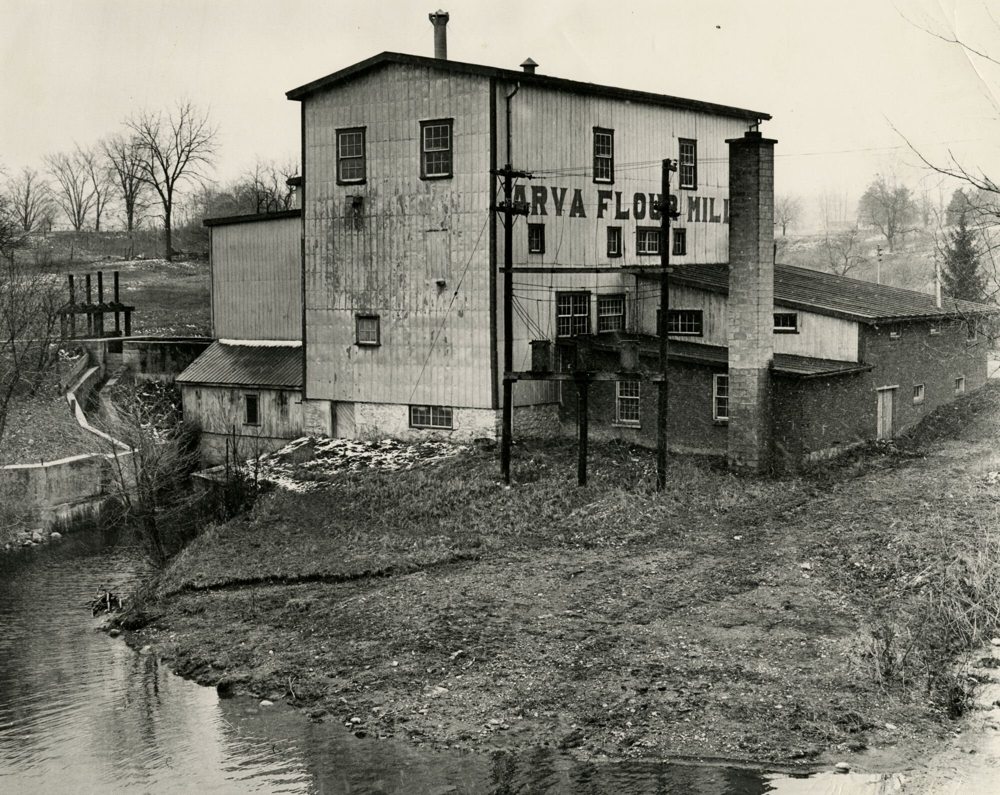
The mill in its early years — on the banks of Medway Creek, with the head-race running along the water. Courtesy of the Archives and Special Collections, Western Libraries (AFC526-5).
Founding · St. Johns Mill
The mill begins on Medway Creek
Under Colonel Thomas Talbot's land
grant program, Thomas Martin receives
50 acres at lot 16, concession 7 — on condition that
he build a gristmill on Medway Creek. Martin's
brother-in-law, Michael Flood, settles
the north half of the lot. Construction begins on the
road between Lucan and London.
The mill is originally known as St. Johns
Mill — named for the village of St. Johns that
grows up around it, which in turn is named for the
Anglican church of St. John the Divine (built 1822 on
William Geary's farm). Both the creek and the mill
were, at the time, called after Martin himself.
Water is the only source of power, drawn from a dammed
section of Medway Creek that still forms the
Mill Pond today — though the dam
itself is not completed until 1825.
Very little is recorded of the mill's first four
decades: it changes hands more than once, and Martin
himself dies in 1837 before the mill and dam are fully
built.
1822 – present
Sister institution
St. John the Divine — the church across the road
Long before Arva had its current name, it had
St. John the Divine — the Anglican
church founded in 1822 on William
Geary’s farm, a few minutes’ walk from the mill. The
village was called St. Johns after the church,
and the mill itself was originally the St. Johns
Mill. When the post office needed a distinct name
in 1849, the village became Arva; the church kept the
older name.
In the 1830s, before he became first Bishop of Huron,
Benjamin Cronyn — the Irish-born
evangelical who would go on to found
Huron College (now part of Western
University) and shape Anglicanism across southwestern
Ontario — served as rector of the Arva township church,
giving it up only in 1841. The church’s present brick
building went up in 1875, replacing the original frame
structure.
Two hundred years on, the church and the mill still
anchor the same small crossroads. Mark Rinker’s late
father, Fred Rinker — who ran
Magna-Pak just across the highway from the mill
and first drew the family into Arva — is buried in
St. John’s Cemetery, a few blocks from
the rollers. The mill grinds; the church endures; the
same valley holds both.
1837 – 1869The struggle to build
A contested half-century
Ownership fights, but the mill keeps working
Thomas Martin dies in 1837 with the
dam and mill only partly built. His nephews —
James and Thomas Flood — clash with
millwright William Carlill over who
will finish the mill and inherit the land. Petitions
fly across the township (one signed by
Rev. Benjamin Cronyn, later first
Bishop of Huron), the case goes to court, and the
land is ultimately forfeited by both sides. A public
auction is held in September 1840.
Edward Matthews — no relation to
the later Matthews family — wins the auction. He
dies in 1850 leaving heavy debts, and the property
sits tangled in his estate for nineteen years.
Through all of it, the mill keeps turning: by 1857
Wm. Saunby is on record running the
grist mill, and by 1867 an English immigrant named
Jacob Hawkins is the miller in
charge — two years before he finally buys the site
from the Matthews estate. The 1819 mill seat has
changed hands under duress, but it never stops
grinding grain.
1849
Naming
St. Johns becomes Arva
The village is first known as St. Johns
— after St. John the Divine, the church built in 1822 on
William Geary’s farm. When a post office is established in
1849 with Joseph Sifton
as postmaster, a different name is required (there is
already a St. Johns post office elsewhere in Ontario). The
name Arva is chosen, after
Arvagh in County Cavan, Ireland.
Officially the village is Arva from 1849 onward — but
locals keep calling it St. Johns well into the 1880s
before “Arva” fully takes over.
Around the same time, the first concrete record of the
mill’s operator appears: Wm. Saunby, running the
grist mill in 1857.
1869
Hawkins era begins
Jacob Hawkins buys the mill for $5,075
Renamed the Jacob Hawkins Flouring Mill. Under
Hawkins, the enduring Imperial and
Daisy flour brands are established — labels
the mill still uses today. The Daisy brand takes its name
from Hawkins's daughter Daisy, who modeled for the original
red-and-white poster. By 1880, Arva is home to 260 residents
anchored by the mill.
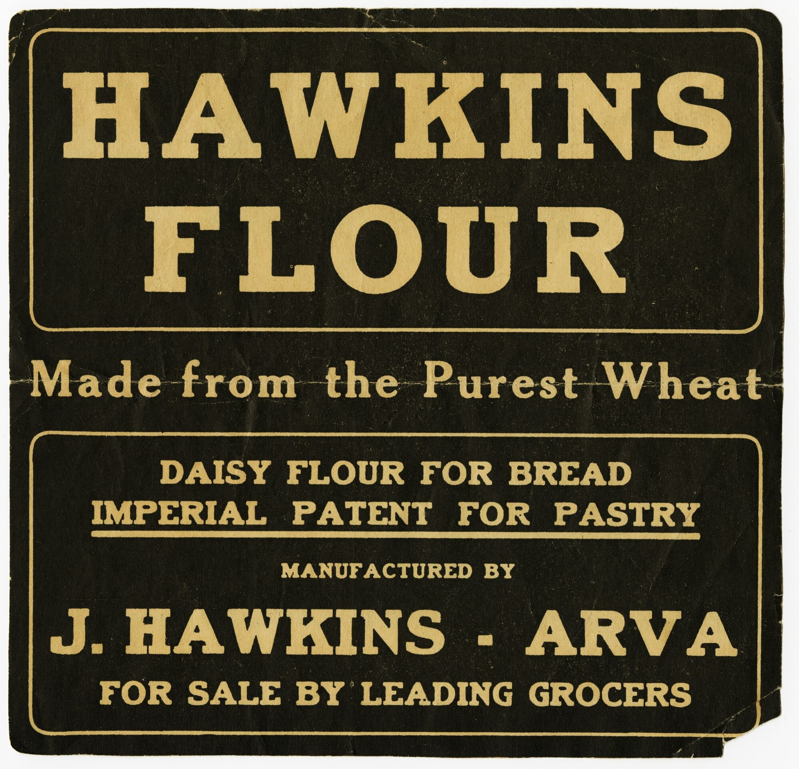
A Hawkins-era ad: “Daisy Flour for bread, Imperial Patent for pastry — manufactured by J. Hawkins, Arva.” Courtesy of the Archives and Special Collections, Western Libraries (AFC526-159).
1904Pivotal transition
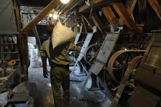
Dustin Blackall, Arva's head miller and GM, in his earlier days at the mill — among the 1904 Goldie & McCulloch roller stations still in daily use today.
Stones out. Cold roller mills in.
Ten Goldie & McCulloch cold roller mills go live
The Goldie & McCulloch Co. of Galt, Ontario — a major
Canadian machinery builder — supplies ten cold
roller milling stations. Each pair of rollers
crushes grain quicker, cooler, and finer than millstones,
letting Arva produce fine white flour at competitive
volumes while nearby water-powered mills fold.
These are the same machines, driven by leather belts up to 20
metres long running from a central line shaft, that still
mill flour at Arva today.
10roller stations
~1,200 lbflour per hour
~4 tonsflour per day, today
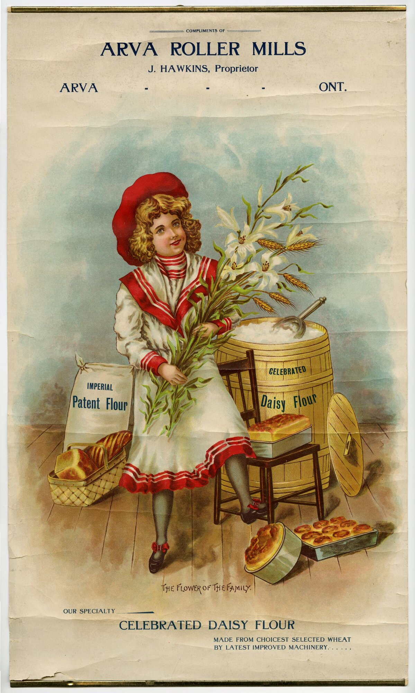
The “Flower of the Family” Daisy Flour poster from the Hawkins-era Arva Roller Mills — Daisy for bread, Imperial Patent for pastry. Courtesy of the Archives and Special Collections, Western Libraries (AFC526-265).
1907 – 1985
The McCormick's contract
78 years supplying a London institution
In 1907, Arva signs a supply agreement
with London's McCormick Manufacturing Company
— the “Sunshine Palace” biscuit and confectionery works on
Dundas Street East, one of the largest food factories in
North America. The deal is developed by Clarence
Scott, who would come to own the mill in 1919.
Arva provides the soft wheat flour McCormick's needs for
its biscuits; in return, the mill gets a steady income and
job security.
By the 1940s, Arva is producing roughly 3 million
pounds of flour a year for McCormick's. The
contract runs 78 years, ending when the
industry's shift to speed and scale leaves the slow,
artisan Goldie & McCulloch rollers behind — which is
exactly the trait that would define the mill's next
chapter.
1912
A local legend, before the White Stripes
The nitroglycerine safe robbery
In 1912, John Murray and Peter Fairburn
blew the mill's office safe with nitroglycerine and made
off with roughly $180 — about $5,000 in
today's money. Both were caught and sentenced to three
years.
The safe is still in the mill office today. The scars
from the blast are still visible on it.
1916 – 1923
Power & modernization
Barber turbines installed; electric motor drives the roller line
c. 1916 — Barber horizontal turbines
are installed in the mill race, replacing the earlier
waterwheel. Water flows through the race, spins the turbines,
and the resulting mechanical rotation is coupled to the mill's
line shaft by belts. No electricity required — the turbines
run on Medway Creek itself.
1919 — Jacob Hawkins petitions London
Township Municipal Hydro to bring electricity to the mill.
Service arrives in the following years.
1923 — An electric motor is installed and
takes over driving the Goldie & McCulloch roller mills
via leather belts and a line shaft. The turbines keep
spinning under water power, but on the front half of the mill
they are no longer the primary drivetrain — they continue to
power the back half (the elevator shafts that lift flour to
the sifting baskets at the top of the mill) for another
century.
1919 – 2021
A century of family stewardship
Templeman → Scott → Matthews: one family, one mill, a century
1919 — Hugh Templeman,
a Peterborough native and bookkeeper, and his
son-in-law Clarence Scott, a miller
from Port Hope who had been working at Hunt Milling in
London, purchase the mill together. Templeman keeps
the books; Scott runs the mill floor. The Templeman
daughter's marriage to Clarence is the first of two
marriage-in threads that will carry the mill through
the century.
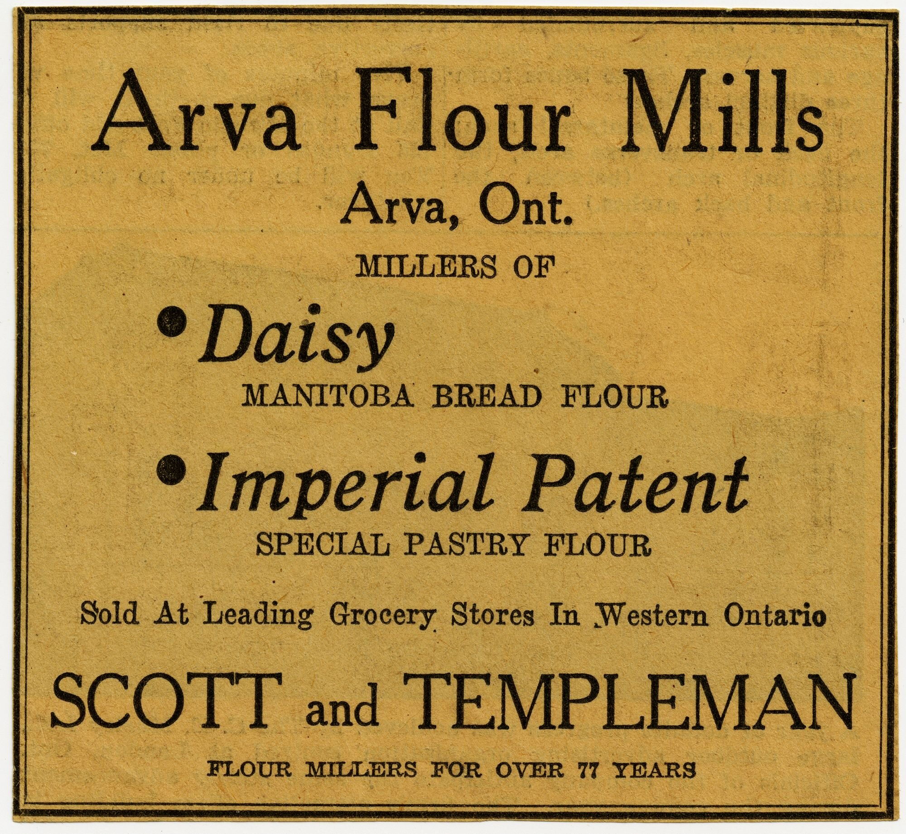
Scott & Templeman — “Flour Millers for Over 77 Years.” A newspaper ad from the Scott-Templeman partnership era. Courtesy of the Archives and Special Collections, Western Libraries (AFC526-169).
1935 – 1978 — Harold
Scott, Clarence's son, joins the mill in 1935.
He takes over his grandfather Templeman's shares in
1946, becomes president in 1961, and leads Arva
through the postwar decades. Harold is committed to
producing nutritious, wholesome flour — rather than
following the industry trend of stripping vitamins
and minerals during milling. His brother-in-law
John (Jack) McFarland serves as head
miller for thirty years alongside him.
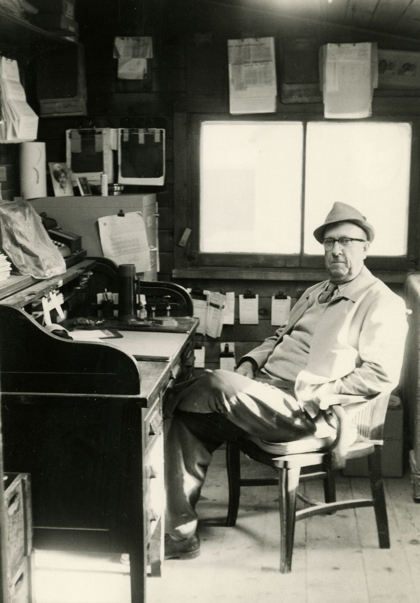
Harold Scott at his roll-top desk in the mill office — owner of Arva Flour Mills from 1946, president from 1961, and the third generation of the Templeman–Scott family line to run the mill. Courtesy of the Archives and Special Collections, Western Libraries (AFC526-60).
Still here. That same roll-top desk
sits in the same spot in the mill office today — the
paperwork has changed, but the desk is still the
centre of operations.
1978 – 2021 — The second marriage-in
thread: Bill Matthews — no relation
to Edward Matthews — grew up in Sarnia and spent
eighteen years as a Great Lakes sailor before marrying
Harold's daughter, Susan Scott. Bill
learned the milling trade and took over from Harold
in 1978. Bill's son Mike Matthews,
who grew up on the mill property, takes over at age
22 in 1999. From Templeman and Scott through the
Matthews name, it's the same family thread — a
century of continuous stewardship.
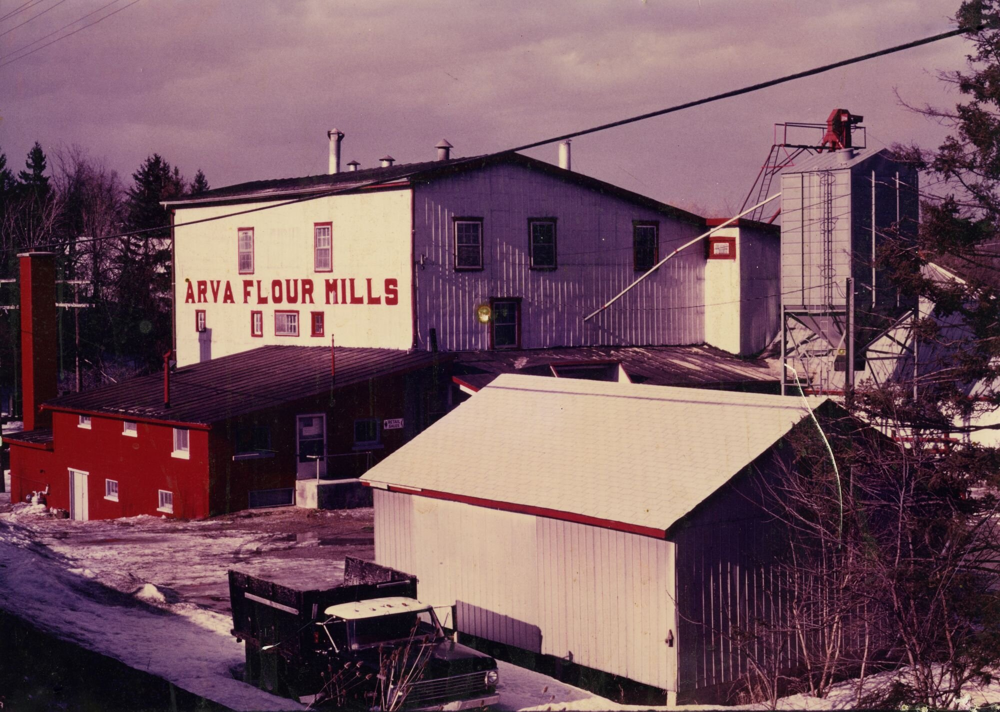
The mill during the Matthews era — the classic red-lettered exterior with elevator and loading dock. Courtesy of the Archives and Special Collections, Western Libraries (AFC526-23).
1978
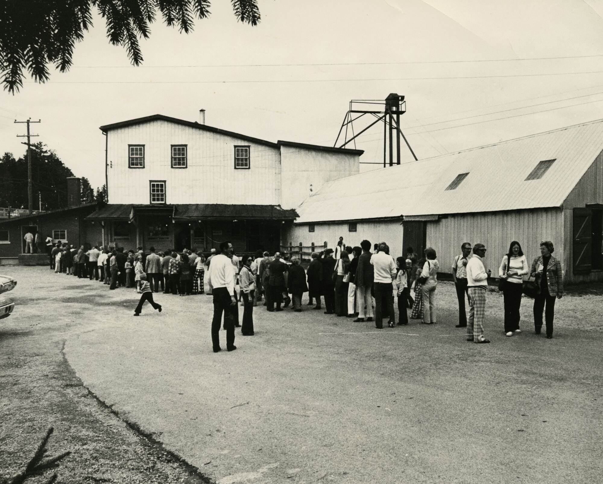
Even before the Mill Store opened, Arva drew a crowd — people lined up outside the mill, October 1973. Courtesy of the Archives and Special Collections, Western Libraries (AFC526-30).
The retail Mill Store opens
Bill Matthews turns a working mill into a destination
Bill takes over from his father-in-law Harold Scott and
opens a retail store on the mill site — selling flour,
baking supplies, and later dog and cat food, gradually
expanding the inventory to fill customer requests.
Where wholesalers once loaded burlap sacks off the dock,
neighbours now come in for a bag of flour and a chat.
Within a generation, the retail store becomes the
mainstay of the operation.
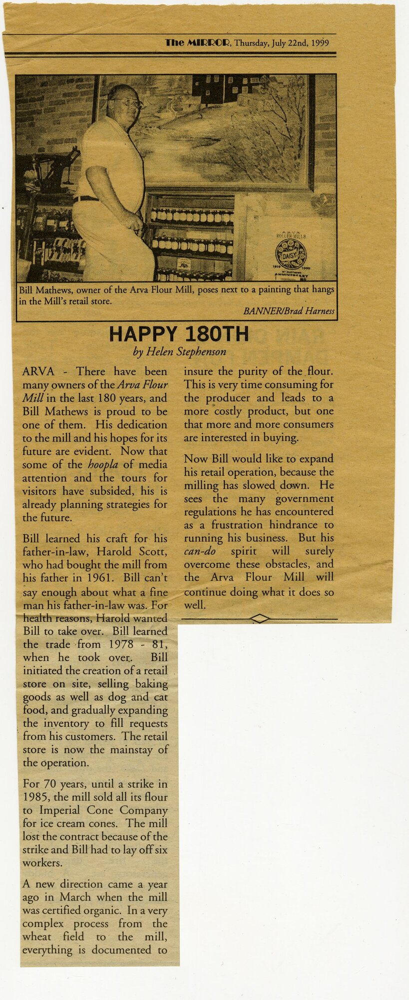
The Mirror, July 22, 1999 — “Happy 180th”: Bill Matthews in the retail Mill Store beside a painting of the mill, marking Arva's 180-year milestone. Courtesy of the Archives and Special Collections, Western Libraries (AFC526-193).
1999 – present
Community tradition
From Millfest to today's Heritage Festival
In July 1999, the mill's 180th anniversary
is marked with Millfest — a one-off community
celebration on the mill grounds. The Mirror ran
“Happy 180th” to mark the occasion.
Under Mark Rinker, the idea returns as the
Arva Heritage Festival — an annual
weekend celebrating the mill, the village, and the
surrounding farming community. Same crossroads, same
creek, same idea: everyone gathers at the mill.
c. 2007 – 2016
A chef's flour
The Only on King orders from Arva
Through the Matthews era, London's celebrated
The Only on King restaurant becomes a
regular buyer of Arva flour. enRoute magazine
names The Only #6 on its Best New Restaurants
in Canada list for 2008 — a national
spotlight that put Arva-milled flour on plates far
beyond the mill's usual radius. The partnership
anchors a generation of London chefs learning to cook
with a stone-mill-adjacent, cold-roller flour they
could get by driving twenty minutes north.
July 7, 2007
Local legend
The White Stripes play the loading dock
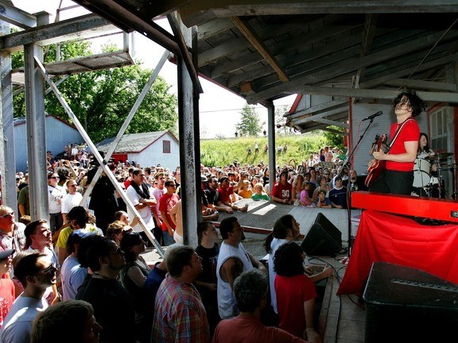
Jack White on the mill’s loading dock — July 7, 2007.
Photograph from the London Free Press front-page
story, framed in the mill office.
On July 7, 2007, during their
Icky Thump Canadian tour, The White
Stripes perform a free “B-show” — announced
only hours ahead on their fan bulletin board — on the
mill’s 100+ year-old loading dock. Jack and Meg White
play a full nine-song set including Hotel Yorba,
Jack the Ripper, One More Cup of Coffee,
and Hello Operator, hours before their main
show that night at London’s John Labatt Centre.
The set is later released on the vinyl Under Great
White Northern Lights — B-Shows, and the mill’s
appearance is featured in the tour’s 2009 documentary
Under Great White Northern Lights (dir. Emmett
Malloy).
The London Free Press ran the story on the front
page. The framed article still hangs in the mill office.
2016 – 2017
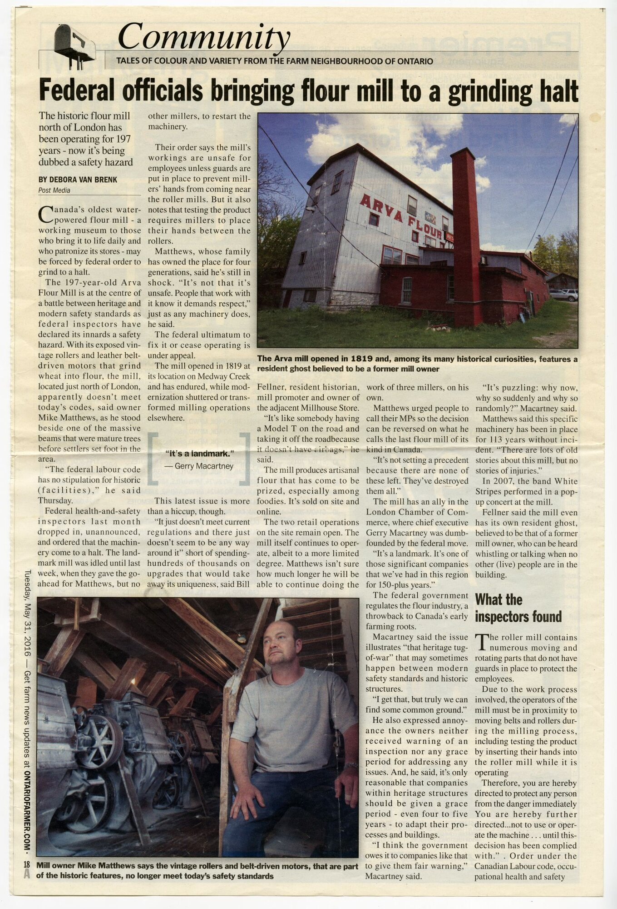
Ontario Farmer, 2016 — “Federal officials bringing flour mill to a grinding halt.” Mike Matthews inside the mill among the century-old rollers. Courtesy of the Archives and Special Collections, Western Libraries (AFC526-181).
The safety-order fight
Mike Matthews defends the roller line
In May 2016, a federal Occupational
Health & Safety inspector orders the mill to shut
its rollers down or install modern guards over the
Goldie & McCulloch machines — machinery the
inspector deemed a safety hazard. Mike Matthews argues
the guards would obscure the very equipment that makes
the mill a working museum, and that the mill has
operated the same machines for over a century without
a single recorded operator injury on the roller line.
Community support pours in: 10,000 signatures on a
petition, calls from local MPs Peter Fragiskatos and Bev
Shipley, and backing from the London Chamber of
Commerce. In February 2017, the
Occupational Health & Safety Tribunal
overturns the initial order. The
London Free Press covers the ruling on the
front page: “Arva mill back to the old grind.”
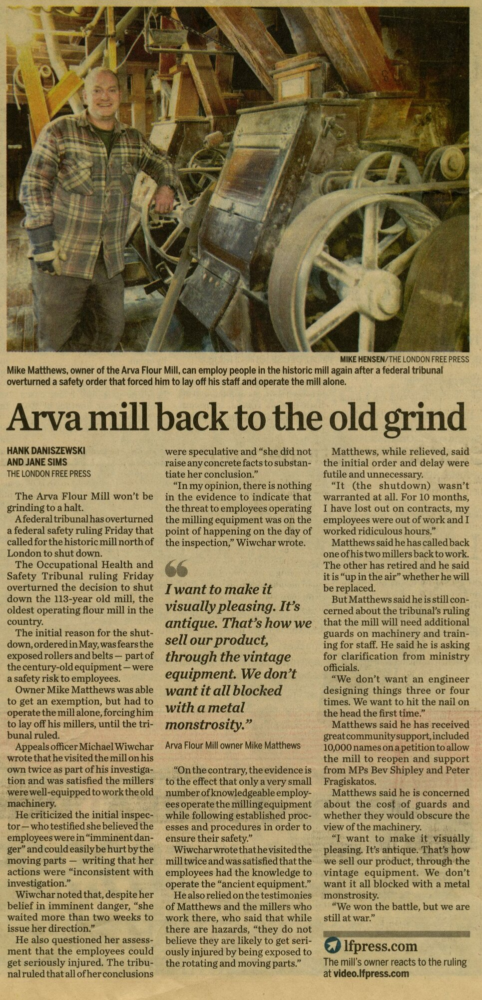
London Free Press, February 2017 — “Arva mill back to the old grind.” Mike Matthews with the vintage rollers after the tribunal's ruling. Courtesy of the Archives and Special Collections, Western Libraries (AFC526-180).
“I want to make it visually pleasing. It’s antique.
That’s how we sell our product, through the vintage
equipment. We don’t want it all blocked with a metal
monstrosity.”
— Mike Matthews, London Free Press, 2017
2020
Pandemic pivot
The back half of the mill converts to electric drive
Pandemic-era flour demand exceeds what the water-powered back
half of the mill can support. The elevator shafts and
sifting-basket line — the last mechanical link between
Medway Creek and the mill's drivetrain — are converted to
electric drive to keep up with demand. It is the end of 201
years of continuous mechanical water power at Arva.
Water still flows through the mill race today, and the Barber
turbines still turn on the creek — but they are no longer
mechanically coupled to the mill.
July – September 2021The mill goes up for sale
A national story
“End of an era?” — Arva goes on the market
In July 2021, Mike Matthews lists the
mill and its six-acre property for sale. Federal
labour rules require him to shut down the entire
drivetrain every time something needs fixing — no
one else is allowed near the belts while the mill
runs. He is 44, has a three-year-old at home, and
after two decades of working alone among the
century-old rollers, the work is taking a toll.
“People swear by our flour. I don’t know what I’ll do
when I don’t have my flour to bake with.”
— Mike Matthews, CBC News, July 30, 2021
The story lands across Canadian media. CBC calls it
“a beloved local flour mill with a storied past
and an uncertain future.” The listing draws
interest from developers as far away as
China — many of them pitching redevelopment
plans. Fear spreads locally: the working museum could
become a condo site.
September 15, 2021Saved
New stewardship
“End of an era? Not so fast.”
On the morning of September 15, 2021,
a release goes out: the mill has been sold to a
local businessman, Mark
Rinker, who intends to keep it running.
Matthews had had offers from around the world —
interest had come from as far away as
China, and many of the parties wanted to
redevelop the land — but he chose the local buyer
whose plan was to preserve the legacy rather than
replace it.
“We had a lot of interest from multiple parties all
over the world who wanted to re-develop the land,
but ultimately, Mark’s vision to respect and continue
the legacy of what our family has built over the last
100 years was most important to us.”
— Mike Matthews, CTV News London, September 15, 2021
“It’s simple really, being at the Mill gives me joy.
From a very young age I formed a bond with the
property, the people and processes that make the
Mill special. Keeping the rich history and traditions
of the Mill intact are as important to me as any
commercial success.”
— Mark Rinker, CTV News London, September 15, 2021
The transaction closes in October 2021.
Mark — recently retired as a Vice President in
Pharmacy Automation Sales — and Joelle Rinker
formally take ownership of Canada’s
sixth-oldest business. The heritage
is safe; the Goldie & McCulloch rollers keep
turning; the same corner, the same creek, still
grinding wheat.
June 2022National inflection
Red River Cereal
Arva acquires a discontinued Canadian breakfast icon
On June 1, 2022, Arva Flour Mills acquires
the Red River Cereal brand from
Smucker Foods of Canada Corp., a subsidiary
of the J.M. Smucker Co. Red River — a hearty blend of cracked
wheat, rye, and flax created in Winnipeg in 1924 — had been
discontinued by Smucker's in 2020–21, devastating the
northern Canadian communities where it was a breakfast
staple.
Arva restores the original 1924 recipe (Smucker's had
switched to steel-cut wheat in 2011) and relaunches
the brand. Within three years, Red River Cereal reaches
1,000+ retailers with Canada-wide distribution.
It becomes Arva's first fully national brand — and one
of the more distinctive brand-rescue stories in
Canadian food.
1924brand origin (Winnipeg)
2022acquired from Smucker's
1,000+retailers by 2025
August 2022
Full of Beans acquisition
Arva acquires a local artisan gluten-free brand
In 2022, Arva acquires Full of Beans,
a local Ontario artisan gluten-free baking brand. The
Full of Beans line — gluten-free flours and baking
mixes — is co-packed by BCC Foods,
keeping production close and quality tight while giving
Arva a dedicated gluten-free portfolio alongside its
heritage flours.
February 2024
Red River Café opens
A café rises next to the mill
In late February 2024, the Red River Café
opens adjacent to the historic mill — a culinary
showcase for Arva’s artisan flours and the newly-revived
Red River Cereal brand. The menu features fresh baked
goods, breakfast, and lunch, all made with flour milled
steps away on the vintage Goldie & McCulloch rollers.
Housed adjacent to the mill’s historic property, the
café turns the site from a working mill with a retail
shop into a genuine destination — the kind of place
where a Saturday-morning drive up Highway 4 ends in
scones, sourdough, and a bag of flour ground that week.
Hours: Mon – Sat 9AM – 3PM, Sun 10AM – 3PM.
August 2024
Certified Organic
Arva earns organic certification from CSI
After months of preparation led by Head Miller and GM
Dustin Blackall — auditing grain
sourcing, cleaning protocols, segregation practices,
traceability records, and every point where organic and
conventional grains could touch — Arva Flour Mills
achieves formal organic certification from
CSI in August 2024.
For a 205-year-old operation, the certification is less
about changing what Arva does than proving what it
already does. The mill has always sourced from a tight
network of Ontario growers; the CSI audit puts that
supply chain, and the mill’s handling of it, on the
public record. Certified organic flours now sit alongside
the conventional lines on the shelf — same rollers, same
millers, same creek.
February 2025Buy Canadian
On the front page
Riding the Buy Canadian wave
On February 4, 2025, Canada imposes 25%
counter-tariffs on the first tranche of a $155-billion
package of U.S. goods in response to new American tariffs.
A Buy Canadian movement takes hold across the country.
On February 10, 2025, the
London Free Press reports — in a story
republished the same day by Bakers Journal —
that Arva Flour Mills is
"riding a business boom from the buy-Canadian push
prompted by the threatened U.S. trade war."
Today
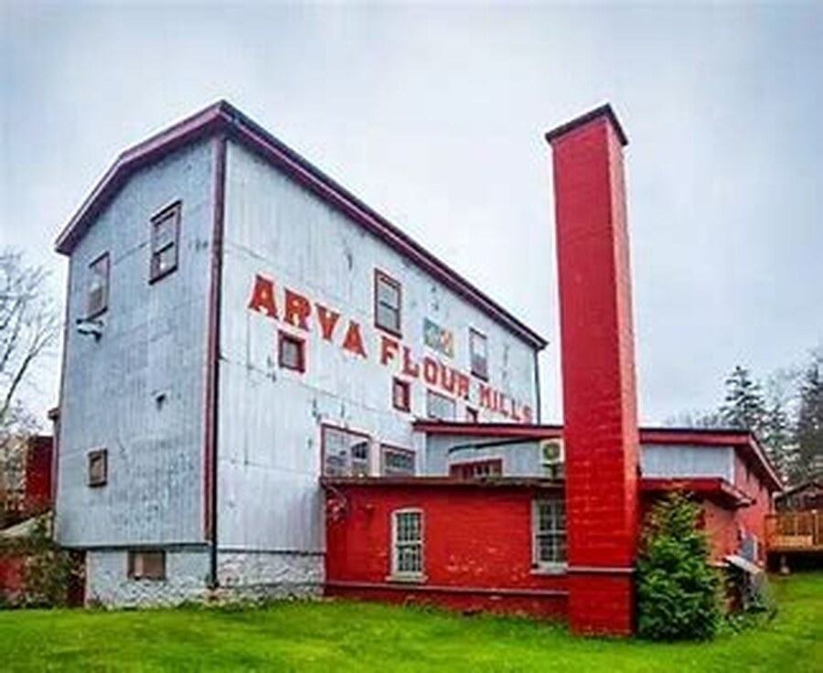
The mill today — the classic exterior on the banks of Medway Creek, unchanged in silhouette for over a century.
Living heritage
Canada's oldest commercial flour mill, still working
The mill operates as a working artisan production facility,
a retail Mill Store, and the Red River Café. It is a
Certified B Corporation (pending reverification), produces roughly
370 tonnes of flour per year from ~500 tonnes of
grain, and closes the loop by sending bran and
middlings to a local livestock farmer and chaff back to
Arva Grain for mulch.
Water still flows through the mill race, and the Barber
turbines still turn. A long-standing plan sits on file: to
pair them to a generator and convert that free mechanical
energy into renewable electricity for on-site use, closing
a loop begun 207 years ago on Medway Creek.
Living operations
⚡
Electric delivery truck
Arva’s wholesale flour deliveries run on an
electric truck — short local routes, zero
tailpipe emissions from mill to bakery.
🔌
Free public Level 2 EV charger
The mill hosts a free public Level 2 charger,
listed on
PlugShare — open to any driver stopping in
for coffee, flour, or a walk along the creek.
🍾
Mill Store
The retail Mill Store sells every flour ground
that week, plus grains, baking supplies, and
local food from partner producers.
📦
arvaflourmills.com
The mill’s e-commerce platform ships flour,
Red River Cereal, and baking mixes across
Canada — direct from Arva to the customer’s
door.
🍞
Sourdough workshops
Regular hands-on sourdough classes teach
home bakers to work with Arva’s heritage flours
— an active thread of the mill’s education
program.
🚶
Mill tours
Public and group tours — including school
groups, community organizations, and industry
partners — remain a regular part of the
operation.
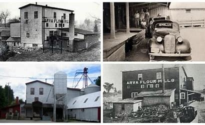
The mill through the eras.
Same building, same Medway Creek site, four different centuries of Arva photography — from the early 1900s to today.
Chapter Two · Power & Machinery
How the mill has been powered
The story of Arva's power is the story of every industrial mill
in Canada — but told in one building, with the same machines,
over 207 years. What follows is what drives the flour, and what
has changed.
1819 – 1923
100% water-powered
For the mill's first 104 years, water is the
only power source. A dam on Medway Creek — built in 1825 —
creates the Mill Pond. Water is channeled through the mill
race to a waterwheel and, later, to horizontal Barber turbines
(c. 1916). Rotational energy is transferred by leather belts
and a line shaft to the millstones, and after 1904, to the ten
Goldie & McCulloch roller mills.
Power source: Medway Creek
Drive: waterwheel → Barber turbines (c.1916)
Coupling: leather belts + line shaft
1923 – 2020
The hybrid century
An electric motor is installed in 1923 and
takes over the roller-mill drivetrain via leather belts and a
line shaft. But water power isn't retired — the back half of
the mill (the elevator shafts that lift flour to the top of
the building for sifting) continues to run on the Barber
turbines for another 97 years.
Front half: electric drive (rollers)
Back half: water turbines (elevator + sifters)
Combined: the mill's hybrid drive era
2020 – present
Fully electric drivetrain
During the pandemic surge, flour demand exceeds what the
water-driven back half can support. The elevator and sifting
lines are converted to electric drive. For the first time
since 1819, no part of the mill's drivetrain is mechanically
coupled to Medway Creek.
Drive: fully electric across both halves
Turbines: still spinning, not coupled
Water flow: unchanged through the mill race
A dormant on-site asset
The 1916 turbines are still there
Arva's dam, mill race,
and 1916 Barber horizontal turbines are
all still on-site — water still flows, the turbines still
turn, they're just uncoupled from the grain drivetrain.
Arva recognizes the hydro system as a real on-site
renewable asset and continues to monitor the conditions
that would make reactivation viable: Ontario export
compensation, net-metering rules, and small-hydro
procurement openings.
The path is straightforward when the economics are:
pair the still-turning turbines to a generator and
convert free mechanical rotation into renewable
electricity for on-site use — closing the loop opened in
1819. Documented in Arva's B Corp Climate Action Plan
(CA 2.1) as monitored renewable readiness.
Asset: 1916 Barber horizontal turbines, mill race, dam
Status: fully operable, uncoupled since 2020
Path: turbine + generator = renewable electricity
Governance: B Corp CA 2.1 climate plan, monthly Ontario-policy watch
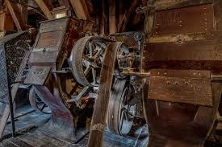
Cast-iron flywheel and belt drive on one of the Goldie & McCulloch roller stations — the same drivetrain design in place since 1904.
A word on "water-powered"
Trade press and national media often describe Arva as
"North America's oldest water-powered commercial flour mill."
That's how the outside world knows us. Strictly speaking, the
mill's drivetrain became fully electric in 2020 — but the
water-power heritage is real, continuous, and physically still
here: the dam, the mill race, and the turbines. Our clearest
claim, and the one on our masthead, is what remains
unambiguously true: Canada's oldest commercial flour
mill, since 1819.
Chapter Three · The Road Past the Door
The Proof Line — how a toll road became Highway 4
Long before it was Highway 4, the road running past the mill
was called the Proof Line — the surveyed
corridor from London to Lucan through the Medway Creek
valley. The mill was here first, watched the toll gates go
up, watched them come down in flames, and remains at the
same crossroads more than a century after the last toll was
paid.
1849
Freeman Talbot organizes the Proof Line Road Joint Stock Co.
Freeman Talbot organizes a private company with £8,000 in
capital — the Proof Line Road Joint Stock Company
— to formalize the corridor from the corner of Dundas and
Richmond Streets in London north through Arva and Birr to
Elginfield. The road serves London's northern hinterland
and quickly becomes a profitable investment. The mill has
already been grinding for 30 years.
1850s – 1880s
Three toll gates, one profitable route
The completed road runs three toll gates along Richmond
Street north through Arva, Birr, and Elginfield. Farmers,
teamsters, and merchants pay to move grain, flour, and
goods between London and its hinterland. The mill sends
its own flour south down the same road — paying the tolls
that would eventually be burned in its own front yard.
1882
First tollgates come down
Middlesex County Council trades away most of its tollgates
in exchange for the abolition of London's market fees. But
three toll gates on the Proof Line — on the 4th, 9th, and
15th concessions — remain. Public frustration with the
“medieval tollgate” has been building for decades. As one
contemporary writer put it: “the toll-bar across the
road is a sore trial to twentieth century humanity.”
July 26, 1907
The great Arva bonfire
After long negotiation, the City of London, London
Township, Middlesex County, and the Province of Ontario
jointly purchase the Proof Line Road for $11,000,
transferring it to public ownership. That night, in Arva,
the collected toll gates are burned in a huge
bonfire — preceded by speeches from local
magnates delivered from the balcony of the Arva
Hotel.
“On the night of July 26th, 1907, following much speaking
and congratulation delivered from the Arva Hotel balcony,
by local magnates, a huge bonfire gladdened the hearts of
the assembled crowd, and the medieval tollgate passed
forever from the County of Middlesex.”
1920
Ontario designates it King's Highway 4
Ontario formalizes the old Proof Line corridor as
King's Highway 4, preserving the wagon
route as one of the province's major modern roads. The
mill's front door, unchanged, opens onto what is now a
provincial highway.
Today
The same crossroads, still
Every driver going north out of London on Richmond Street
is retracing the Proof Line. The Arva Hotel is long gone.
The toll gates are ash. Almost nothing on that 1907 map
is still working.
The mill is. Same corner, same creek, still grinding wheat.
Chapter Four · Red River Cereal
A discontinued Canadian brand, brought back
Red River Cereal is the second story of Arva. It's the story of
a discontinued Canadian icon — and how a 200-year-old family
mill brought it back, restored the original recipe, and put it
back on 1,000+ shelves.
1924
Winnipeg, Gertrude Skilling's kitchen
Gertrude Edna Skilling develops the original Red River recipe
in her kitchen in Winnipeg — a hearty porridge of cracked
wheat, rye, and brown flaxseeds grown in the Red River Valley.
Her husband, president of the Red River Grain Co., begins
manufacturing it. The recipe is patented in 1929.
1928 – 1995
Maple Leaf, then Robin Hood, then Smucker's
Manufacturing is taken over by Maple Leaf Milling Co. in 1928.
In 1995 the brand is acquired by Robin Hood Multifoods, part
of Smucker Foods of Canada. Under Smucker's, the recipe is
altered in 2011 to include steel-cut wheat rather than the
original cracked-wheat formulation.
2020 – 2021
Discontinuation
Smucker's pulls Red River Cereal from Canadian shelves in
mid-2020, then announces in March 2021 that production has
ceased entirely. Northern Canadian customers — where Red
River was a breakfast staple — are hit hardest.
June 1, 2022
Arva acquires the brand
Arva Flour Mills officially acquires the Red River Cereal
brand from Smucker Foods of Canada Corp. Arva reverts
to the original cracked-wheat-and-rye formulation and
begins on-site production. Retail relaunch begins that
summer at the Mill Store and online.
2022 – 2025
1,000+ retailers and growing
Within three years, Red River Cereal reaches
1,000+ retailers with Canada-wide distribution.
National coverage — including CBC's feature on how an Ontario
flour mill brought back a cereal that had disappeared from
northern shelves — becomes part of the wider story of the
acquisition.
Alongside grocery, Red River Cereal is also available
direct to Canadians through
arvaflourmills.com.
December 2023
100-year anniversary
Arva celebrates the brand's centennial with limited-edition
black-and-red boxes in the original 1.35 kg format, echoing
the 1924 packaging.
Chapter Five · Buy Canadian, February 2025
A Buy Canadian moment
For 207 years Arva has been mostly a local story. In
February 2025, national attention arrived unexpectedly.
February 1, 2025
Canada announces a $155-billion counter-tariff package on
U.S. imports in response to new American tariffs on Canadian
goods.
February 4, 2025
The first $30 billion tranche of 25% Canadian counter-tariffs
takes effect. A grassroots Buy Canadian movement gains
national momentum overnight.
February 10, 2025
The London Free Press publishes
"Pro-Canada sales (from the U.S., too) boom at Arva
Flour Mill near London, Ont." The story is republished
the same day by Bakers Journal, reaching a national
baking-industry audience. Arva is publicly framed as
"Canada's oldest water-powered flour mill … riding a
business boom from the buy-Canadian push prompted by the
threatened U.S. trade war."
Through 2025
The story reaches readers well beyond southwestern
Ontario. Arva keeps doing what it has always done:
milling 100% Canadian grain at a working heritage
site on Medway Creek.
"
Canada's oldest water-powered flour mill, just north of London,
Ont., is riding a business boom from the buy-Canadian push
prompted by the threatened U.S. trade war.
The London Free Press · February 10, 2025
Chapter Six · Supply chain
The farmers behind the flour
Arva's sourcing philosophy is hyper-local first, Canadian second.
Every grain that comes into the mill is tied to a specific
wheat variety, a specific Arva product, and a specific growing
region — four of them in Southwestern Ontario, two outside the
province by necessity.
Grain by grain, farm by region
Each Arva flour SKU is milled from a specific wheat variety,
sourced from a defined growing region.
Soft Red Winter Wheat
Locally adjacent farms · Arva
Milled into Imperial Pastry Flour. Sourced from
farms immediately adjacent to the mill, including Arva Grain
across the highway.
Hard Red Winter Wheat
Monkton – Mitchell region · Perth County
Milled into Daisy Hard Unbleached and
Daisy Hard Whole Wheat Flour. Sourced from
farms in the Monkton – Mitchell region of Perth County.
Spelt Wheat
Petrolia – Wyoming region · Lambton County
Milled into Arva Organic White Spelt and
Whole Spelt Flour. Sourced from organic farms
in the Petrolia – Wyoming region of Lambton County.
Red Fife Wheat
Blyth region · Huron County
Milled into Arva White Red Fife and
Whole Red Fife Flour. Sourced from farms in
the Blyth region of Huron County.
Organic Einkorn
South of Regina · Saskatchewan
Milled into Arva Organic Whole Einkorn Flour.
Sourced from an organic farm south of Regina, Saskatchewan
— the only commercial organic einkorn producer at Arva's
volume.
Organic Emmer Wheat
Armstrong · British Columbia
Milled into Arva Organic Emmer Flour. Sourced
from an organic farm in Armstrong, B.C. — the only
commercial organic emmer producer at Arva's volume.
Across the highway
Arva Grain / Arva Heights Farm
The grain elevator on the north edge of Arva, immediately
across the highway from the mill, is Arva's primary local
partner — growing and storing corn, soybeans, and
wheat, including the soft red winter wheat that
becomes Imperial pastry flour. Same-day deliveries are
routine: the mill calls in the morning, wheat is on-site by
afternoon.
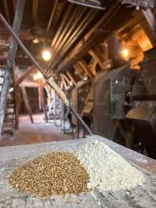
Wheat in, flour out — side by side on a worktable inside the mill.
Grain flow — one year at Arva
~500 t
Grain in from local & Canadian farms
→
~370 t
Flour out Arva & wholesale customers
→
~120 t
Bran & middlings to a local livestock farmer
→
~10 t
Chaff back to Arva Grain for mulch
Chapter Seven · Disambiguation
Arva, Ontario ≠ Arvada, Colorado
Search engines routinely conflate two very different mills a
border and a century apart. This is about the Arva
Flour Mill in Ontario. The Arvada Flour Mill in
Colorado is a preserved museum, not a working
commercial mill.
🇨🇦 Ontario
Arva Flour Mill
Arva, Ontario, Canada
Established
1819 (as St. Johns Mill)
Age
207 years, continuously operating
Status today
Working commercial mill, Mill Store, Red River Café, and e-commerce at arvaflourmills.com
Original power
100% water (Medway Creek dam, 1825)
Current drivetrain
Fully electric since 2020; turbines still turn on the mill race
Bottom line: the Colorado mill is a beautifully
preserved artifact of 1920s American agriculture. The Ontario
mill is over a century older, still turns wheat into flour every
week, and has never stopped operating since 1819. They share
only a coincidental name.
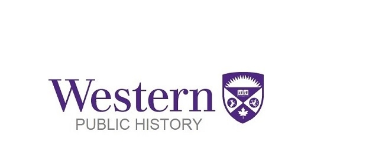
Historical research & archive
With thanks to Western University
Historical research contributed by graduate students
from Western University’s Digital Public
History course, April 2026: Rylee Brooks, Erin
Case, Kim DelMedico, Helen Edwards, Grace Lazzuri,
Claire Pidduck, David Seston, and Beth Zentner — under
the direction of Mike Dove, Director
of Western Public History.
“Producing this timeline for Arva Flour Mill as a
Western University–supported Industry Project was a
superb experiential learning opportunity. Our
students conducted primary and secondary research
into the history of the Mill, its operations and
products, and its wider impact on communities, while
also gathering visual material to share with the
public through the Mill’s website. In doing so, they
gained tremendous appreciation for the site’s
historical significance and ongoing value to the
local community and those across Canada.”
🗄️
Mill records now at Western
The historical documents of Arva Flour Mill —
ledgers, correspondence, photographs, and business
records — are now held at Archives and
Special Collections, Western Libraries
(Fonds AFC526 — Arva Flour Mill),
ensuring that more than two centuries of Ontario
milling history remain accessible to researchers,
students, and the public.